Do
間、個人化への導線
暮らしに間を置く道具を知り、買える場所へ行く。
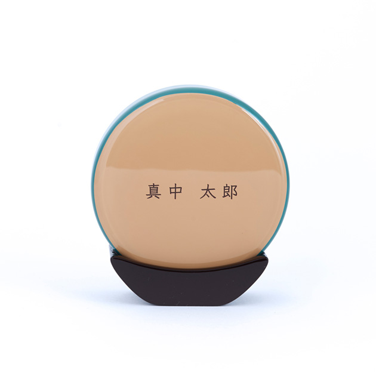
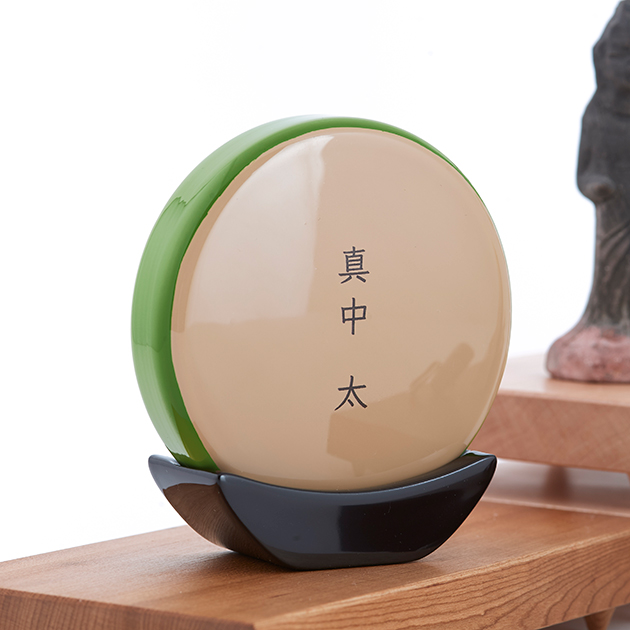
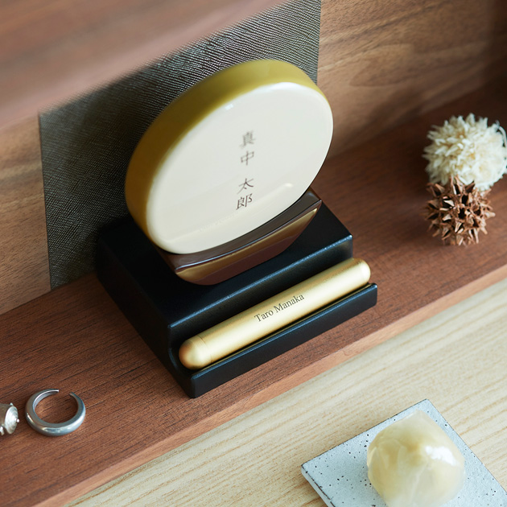
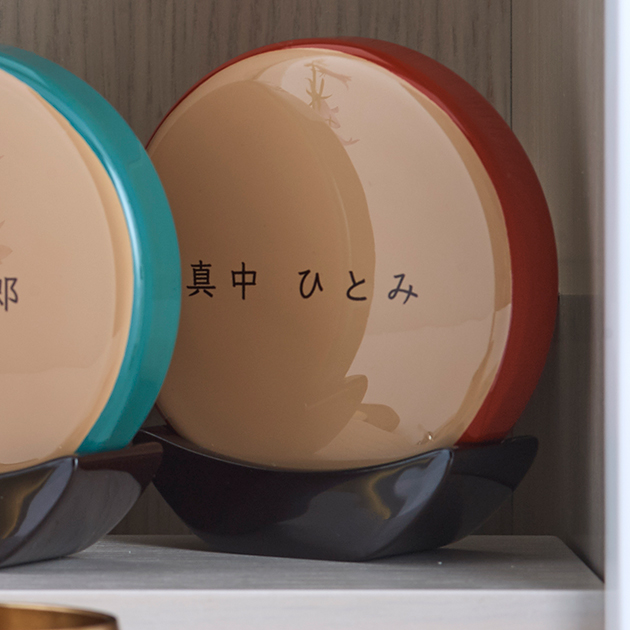
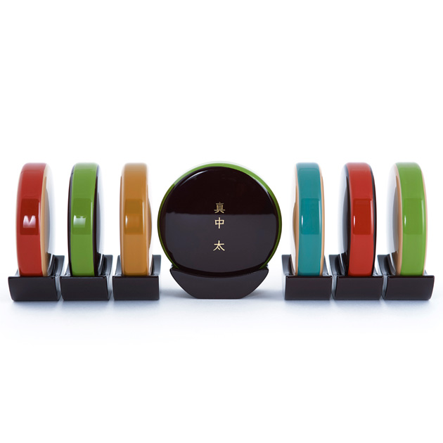
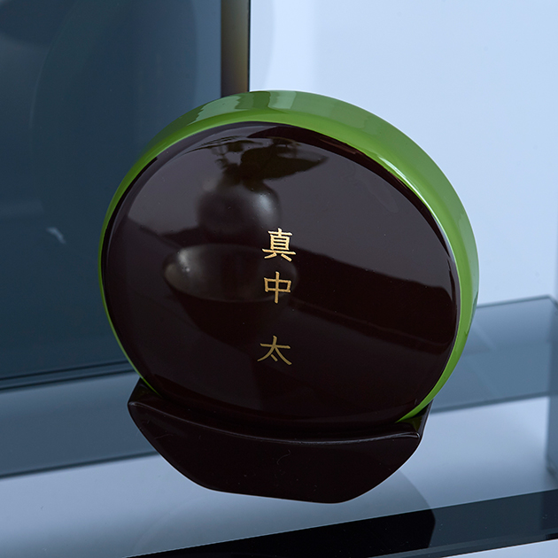
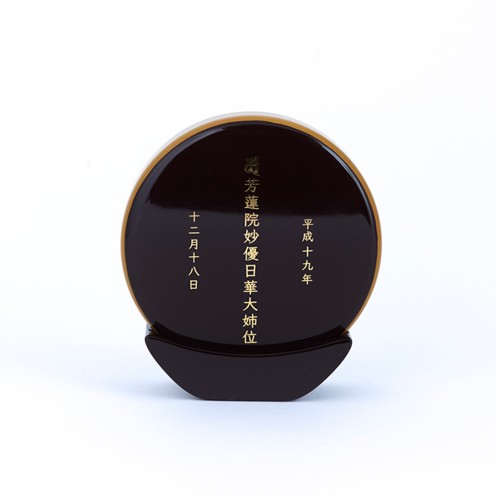

color: ベージュ＆ブルー / ベージュ＆グリーン / ベージュ＆オリーブ / ベージュ＆オレンジ / ブラウン＆ブルー / ブラウン＆グリーン / ブラウン＆オリーブ / ブラウン＆オレンジ
-
ベージュ＆ブルー
¥55,000 税込
-
ベージュ＆グリーン
¥55,000 税込
-
ベージュ＆オリーブ
¥55,000 税込
-
ベージュ＆オレンジ
¥55,000 税込
-
ブラウン＆ブルー
¥55,000 税込
-
ブラウン＆グリーン
¥55,000 税込
-
ブラウン＆オリーブ
¥55,000 税込
-
ブラウン＆オレンジ
¥55,000 税込
商品説明
まあるくて、かわいいお位牌
『ふわり』は大切な人を笑顔で想い浮かべるお位牌です。
特徴的な丸いフォルムは永遠を表す「円」と、繋がりを表す「縁」。旅立つ人と残された人の決して失われることのない繋がりが、まあるい形に辿り着きました。温かく、朗らかに包み込む、朝の優しい光をふわりと感じる。そんな風にあの人の笑顔を想い浮かべていただけるように『ふわり』と名付けました。
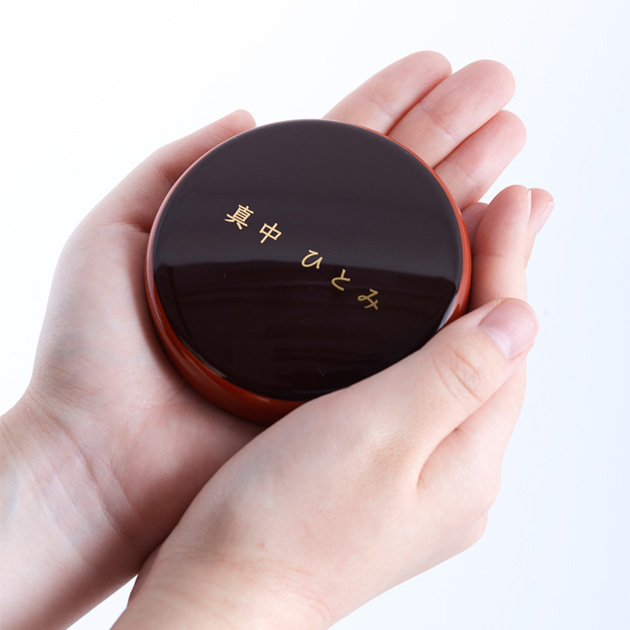
全く直線のないその形
平らな面のない緩やかに膨らんだ丸いフォルムが、絶妙な緊張感を生みだし、温かくも凛とした『ふわり』のデザインの要となりました。
手を合わせる瞬間の安らぎとなり、祈りのある暮らしが体温のある日常になりますようにと想いを込めて。
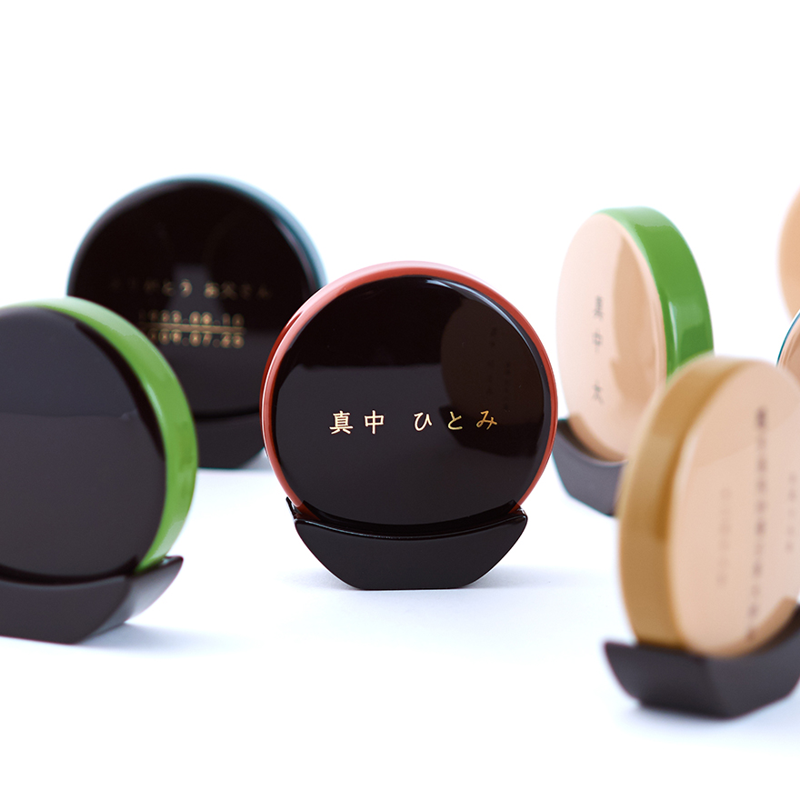
透き通るようなやさしい漆
重々しくなく、軽やかに、美しい透明感を纏わせる漆は、30色以上の候補から『ふわり』オリジナルカラーを完成させました。温かみのあるベージュとブラウンのベースに、ブルー、グリーン、オリーブ、オレンジを掛け合わせた8パターンをご用意いたしました。
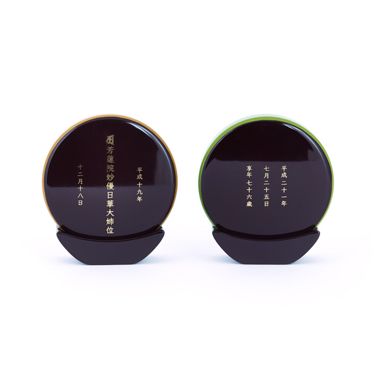
日本屈指の木地師の技
福井で創業200年以上の漆琳堂が世界に誇る越前漆器の美しい技術を結集。
緩やかな丸いフォルムは日本屈指の木地師の技がなければ実現しなかった形です。丸みにたまりなく均等に漆を塗ることや、塗り分けた色の境目をはみ出さずに美しく仕上げることは、見た目以上に難しく、職人技の賜物です。
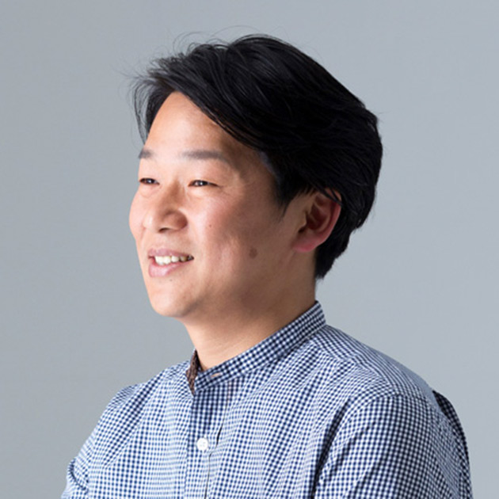
越前で、漆と向き合い続けて八代
【漆琳堂 内田徹】
1793年（寛政5年）、福井県鯖江市で創業。
8代目の内田徹が受け継ぐ、越前漆器のメーカーです。
化学塗料は一切使わず、刷毛で、ひとつひとつ丁寧に漆を塗る。
1500年続く越前漆器の産地で受け継がれてきた技術を、次の世代へつなぐため、
漆とお椀の文化を発信しています。
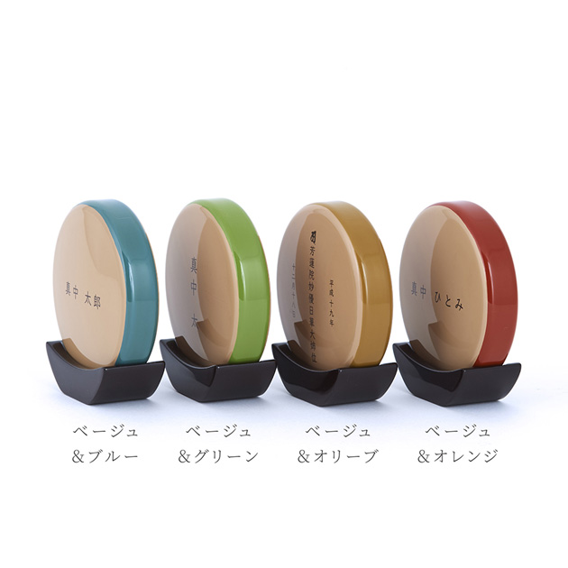
商品仕様
サイズ
全体:幅8.8cm×奥行3.2cm×高さ9.6cm
本体:幅8.8cm×奥行2.4cm×高さ8.8cm
台:幅6.9cm×奥行3.2cm×高さ2.2cm
仕上げ
漆塗り
素材
本体：本漆(素地：樹脂)
台：漆(素地：MDF)
生産地
福井県鯖江市
カラー
ベージュ＆ブルー
ベージュ＆グリーン
ベージュ＆オリーブ
ベージュ＆オレンジ
ブラウン＆ブルー
ブラウン＆グリーン
ブラウン＆オリーブ
ブラウン＆オレンジ
デザイナー
まなか開発チーム